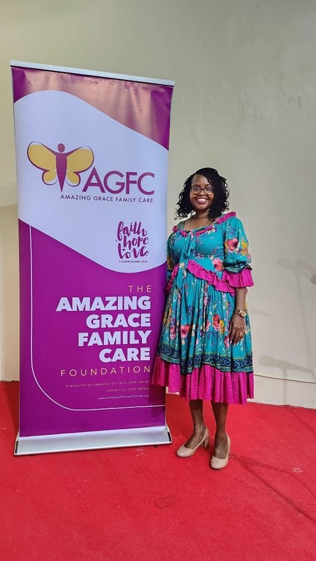
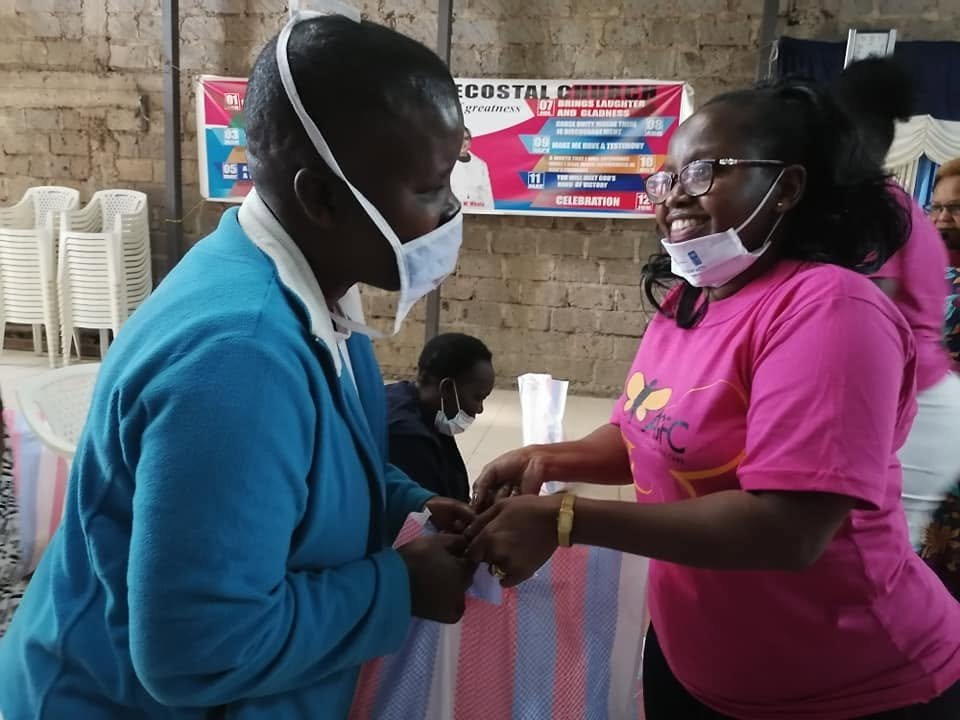

OUTREACH
Reaching The Vulnerable
Supporting vulnerable and less privileged people within society through practical care.
Learn More →Bringing faith, hope and love to vulnerable and less privileged people in our society.

Amazing Grace Family Care Foundation (AGFC) is a community-focused organization based in Mradi Embakasi, Nairobi, Kenya.
The foundation brings faith, hope and love to vulnerable and less privileged people in society by ministering to their material needs.
Through reaching out to people and families in need, AGFC seeks to demonstrate care, compassion and practical support within the community.
We believe that care becomes meaningful when faith and compassion are translated into practical action.
Supporting vulnerable and less privileged people within society through practical care.
Learn More →Reaching children and institutions that provide care to children in need.
Learn More →Turning compassion into meaningful support for people and families.
Learn More →Amazing Grace Family Care Foundation focuses on reaching vulnerable and less privileged members of society.
Our approach includes ministering to material needs while bringing faith, hope and love to the people we reach.
The foundation's community outreach includes connecting with families and institutions that care for children and other people in need.

We believe that care becomes meaningful when faith and compassion are translated into practical action.
Supporting vulnerable and less privileged people within society through practical care.
Learn More →Reaching children and institutions that provide care to children in need.
Learn More →Turning compassion into meaningful support for people and families.
Learn More →Connect with Amazing Grace Family Care Foundation and learn more about our community work.